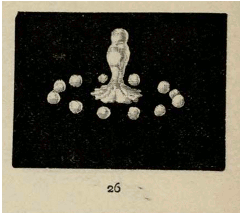

<!DOCTYPE html><html lang="en"><head><meta name="viewport" content="width=device-width, initial-scale=1, maximum-scale=1"><meta http-equiv="X-UA-Compatible" content="IE=10; IE=9; IE=8; IE=7; IE=EDGE"><meta charset="UTF-8"><link href="/images/favicon.ico" rel="shortcut icon" type="image/x-icon"><title>scrolly-gif</title><meta property="og:title" content="scrolly-gif"><link rel="stylesheet" href="./css/app.css"></head></html><body><div class="documentation-container section-header"><div class="row section-header"><div class="column-8 push-2 details-container"><div class="row section-header"><div class="column-12 centered"><h1 class="top-title">scrolly-gif</h1><h4><a href="https://github.com/mathisonian/scrolly-gif">View on Github</a></h4></div></div><div class="row section-header"><div class="column-12 centered section-header"><h2>Installation</h2></div></div><div class="row"><div class="column-8 push-2"><pre><code>$ npm install scrolly-gif
</code></pre></div></div><div class="row section-header"><div class="column-12 centered section-header"><h2>Usage</h2></div></div><div class="row"><div class="column-8 push-2"><pre><code>// place an image tag on the page like this:
// < img class="gif-example" src="preview.png" rel:animated_src="example.gif" />
 
// example with jQuery
// Pass the dom element to scrollyGif however
// is convenient for you.
var scrollyGif = require('scrolly-gif');
 
$('img.gif-example').each(function() {
  scrollyGif(this);
});</code></pre></div></div><div class="row section-header"><div class="column-12 centered"><h2>Introduction</h2></div></div><div class="row"><div class="column-8 push-2">       <p>This library will automatically animate a gif as a user scrolls through the page. The animation starts
when the gif fully enters the viewport and ends when it exits. 
Scroll down to see examples below. All gifs
were found on <a href="http://publicdomaingifs.tumblr.com/">http://publicdomaingifs.tumblr.com/</a>.</p></div></div><div class="row"><div class="column-12"><div class="gif-example"></div><div class="gif-example"></div><div class="gif-example"></div><div class="gif-example"></div><div class="gif-example"></div></div></div><div class="row"><div class="column-12 centered"><h4><a href="https://github.com/mathisonian/scrolly-gif">View on Github</a></h4></div></div></div></div></div><script src="./js/app.js"></script></body>